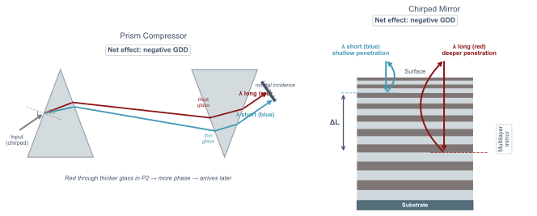

Post-Compression

The Concept
- SPM adds positive chirp — apply negative GDD to recompress
- Quality limited by residual higher-order dispersion
Prism Compressor
- Tunable negative GDD via prism separation
- Low loss, broadband — preferred for visible/UV
- TOD not compensated — limits achievable pulse duration
Chirped Mirror Compressor
- Fixed GDD per bounce from multilayer coating
- Compact, negligible TOD — preferred for NIR
- TOD compensation can be engineered in